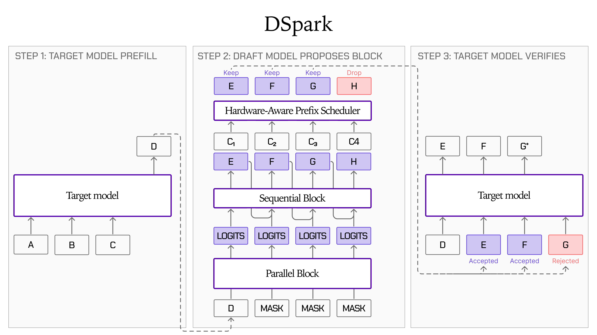
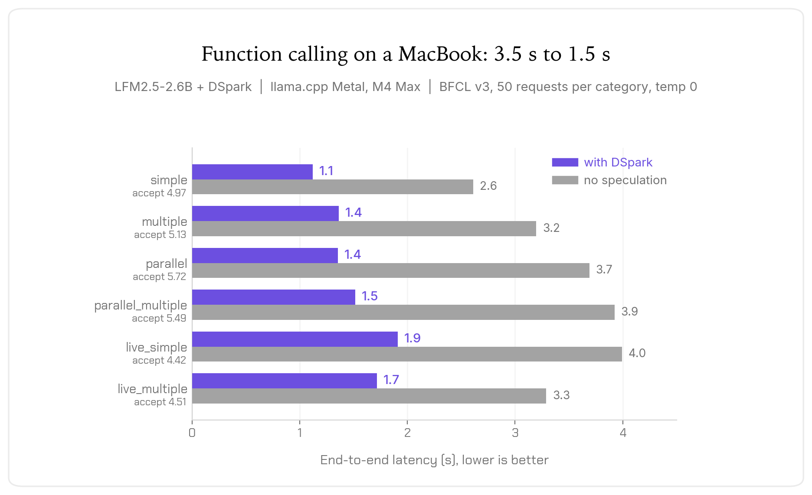

使用 LFM2.5-DSpark 实现高达 3.2 倍的推理加速
文章背景与核心概要
Liquid AI 近期发布了针对 LFM2.5 模型家族中三个模型（LFM2.5-1.2B-Instruct、LFM2.5-2.6B 以及 LFM2.5-8B-A1B）的 DSpark 草稿模型检查点（checkpoint）。这些检查点引入了一种创新的投机解码路径，在保持严格输出质量不变的前提下，以极小的内存开销实现了显著的解码加速。
该技术的核心在于结合了 DFlash 风格的并行主干网络、轻量级顺序头以及置信度调度验证器，有效缓解了大语言模型推理过程中通常面临的内存带宽瓶颈。测试表明，它在 GPU 上最高可带来 3.18 倍的吞吐量提升，在端侧（如苹果芯片）上最高可达 2.87 倍，同时还能将 LFM2.5-2.6B 的函数调用（function-calling）延迟平均降低 57%。此外，它在发布首日即获得了 llama.cpp 和 SGLang 框架的原生集成支持。
摘要
Liquid AI has released DSpark draft model checkpoints for three models within the LFM2.5 family: LFM2.5-1.2B-Instruct, LFM2.5-2.6B, and LFM2.5-8B-A1B. These checkpoints introduce a speculative decoding path that yields significant decoding speedups with minimal memory overhead while strictly preserving output quality.
Liquid AI 为 LFM2.5 家族中的三个模型发布了 DSpark 草稿模型检查点：
LFM2.5-1.2B-Instruct、LFM2.5-2.6B和LFM2.5-8B-A1B。这些检查点引入了一种投机解码路径，在保持严格输出质量的同时，以极小的内存开销带来了显著的解码加速。
Key highlights include:
* Faster Inference: Up to 3.18x throughput improvement on GPUs and up to 2.87x on-device.
* On-Device Agentic Capabilities: Cuts function-calling latency by 57% on average for LFM2.5-2.6B.
* Day-One Framework Support: Upstream integrations for both llama.cpp and SGLang.
主要亮点包括： * 更快的推理： GPU 上的吞吐量提升高达 3.18 倍，端侧设备上提升高达 2.87 倍。 * 端侧智能体（Agentic）能力： 将
LFM2.5-2.6B的函数调用延迟平均降低了 57%。 * 首日框架支持： 已对llama.cpp和SGLang进行了上游集成。
DSpark 是如何工作的？
The decoding phase in Large Language Model (LLM) inference is traditionally memory-bound, meaning most latency stems from streaming weights from DRAM into SRAM rather than heavy computation. Speculative decoding alleviates this by utilizing a lightweight draft model to generate candidate tokens, allowing the target model to verify them in a single forward pass and amortize weight-loading costs.
大语言模型（LLM）推理中的解码阶段传统上受限于内存带宽（memory-bound），这意味着绝大部分延迟来自于将权重从 DRAM 传输到 SRAM，而不是繁重的计算。投机解码通过利用轻量级草稿模型来生成候选 Token 来缓解这一问题，允许目标模型在单次前向传播中对其进行验证，从而分摊权重加载成本。
DSpark combines three core components: 1. DFlash-Style Parallel Backbone: Conditioned on the target model's context features to produce hidden states for all draft tokens in a single forward pass. 2. Lightweight Sequential Head: Modeled as a Markov chain between neighboring tokens to capture inter-token dependencies and increase acceptance rates at later positions. 3. Confidence-Scheduled Verifier: Predicts survival probabilities for each token and prunes low-confidence suffixes when verification costs outweigh potential savings.
DSpark 结合了三个核心组件： 1. DFlash 风格的并行主干网络： 以目标模型的上下文特征为条件，在单次前向传播中为所有草稿 Token 生成隐藏状态。 2. 轻量级顺序头： 建模为相邻 Token 之间的马尔可夫链，以捕获 Token 间的依赖关系，并提高后续位置的接受率。 3. 置信度调度验证器： 预测每个 Token 的生存概率，并在验证成本超过潜在节省时修剪低置信度的后缀。

训练与架构
DSpark models utilize an attention-only architecture consisting of 5 layers (~300M parameters) trained across a diverse data mix (SFT, chat, code, and function calling) for 15 epochs.
DSpark 模型采用仅注意力机制（attention-only）架构，包含 5 层（约 3.03 亿参数），在包含 SFT、聊天、代码和函数调用的多样化混合数据集上进行了 15 个周期的训练。
| Component | LFM2.5-1.2B-Instruct | LFM2.5-8B-A1B | LFM2.5-2.6B |
|---|---|---|---|
| Decoder stack (5 layers) | 241.2M | 241.2M | 241.2M |
| Hidden-state projection | 21.0M | 21.0M | 21.0M |
| Markov head | 33.6M | 65.5M | 65.5M |
| Norms + confidence head | 27.5k | 27.5k | 27.5k |
| Total | 295.7M | 327.7M | 327.7M |
组件 LFM2.5-1.2B-Instruct LFM2.5-8B-A1B LFM2.5-2.6B 解码器堆栈（5层） 241.2M 241.2M 241.2M 隐藏状态投影 21.0M 21.0M 21.0M 马尔可夫头 33.6M 65.5M 65.5M 归一化 + 置信度头 27.5k 27.5k 27.5k 总计 295.7M 327.7M 327.7M
质量一致性
Under greedy decoding, a draft token is only accepted if it matches the target model's distribution. Rejected tokens are replaced by the target model's token. Consequently, the output sequence remains identical to baseline greedy execution, meaning benchmark accuracy metrics (pass@1, exact match) remain completely unaffected.
在贪婪解码（greedy decoding）下，草稿 Token 只有在与目标模型的分布匹配时才会被接受。被拒绝的 Token 会被目标模型的 Token 替换。因此，输出序列与基准贪婪执行完全相同，这意味着基准测试准确率指标（pass@1、精确匹配等）完全不受影响。
CPU 和 GPU 上的推理加速
LFM2.5 DSpark models support llama.cpp (utilizing Metal kernels) and SGLang out of the box. Below are performance metrics measured using a DSpark block size of 9, a batch size of 1, and zero temperature.
LFM2.5 DSpark 模型开箱即用地支持 llama.cpp（利用 Metal 内核）和 SGLang。以下是使用 DSpark 块大小为 9、批大小（batch size）为 1 且温度为 0 测得的性能指标。
LFM2.5-2.6B
| Dataset | Acceptance (of 10) | Speedup on H100 | Speedup on M4 Max |
|---|---|---|---|
| MATH500 | 5.42 | 3.06x (326 → 1000 tok/s) | 2.25x (61 → 137 tok/s) |
| HumanEval | 4.54 | 2.56x (326 → 835 tok/s) | 2.63x (61 → 161 tok/s) |
| MBPP | 4.71 | 2.64x (326 → 861 tok/s) | 2.11x (62 → 132 tok/s) |
| GSM8K | 4.32 | 2.22x (312 → 693 tok/s) | 2.36x (60 → 143 tok/s) |
| MT-Bench | 5.07 | 2.87x (325 → 933 tok/s) | 1.99x (62 → 123 tok/s) |
| Mean | 4.81 | 2.67x (323 → 864 tok/s) | 2.27x (61 → 139 tok/s) |
数据集 接受率（满分 10） H100 加速比 M4 Max 加速比 MATH500 5.42 3.06x (326 → 1000 tok/s) 2.25x (61 → 137 tok/s) HumanEval 4.54 2.56x (326 → 835 tok/s) 2.63x (61 → 161 tok/s) MBPP 4.71 2.64x (326 → 861 tok/s) 2.11x (62 → 132 tok/s) GSM8K 4.32 2.22x (312 → 693 tok/s) 2.36x (60 → 143 tok/s) MT-Bench 5.07 2.87x (325 → 933 tok/s) 1.99x (62 → 123 tok/s) 平均 4.81 2.67x (323 → 864 tok/s) 2.27x (61 → 139 tok/s)
In multi-tool scenarios, D_Spark reduces overall latency by 57% on average for LFM2.5-2.6B.
在多工具场景中，对于
LFM2.5-2.6B，DSpark 平均将整体延迟降低了 57%。

LFM2.5-1.2B-Instruct
| Dataset | Acceptance (of 10) | Speedup on H100 | Speedup on M4 Max |
|---|---|---|---|
| MATH500 | 6.02 | 2.56x (668 → 1712 tok/s) | 2.62x (140 → 366 tok/s) |
| HumanEval | 5.31 | 2.26x (664 → 1499 tok/s) | 2.87x (136 → 389 tok/s) |
| MBPP | 5.52 | 2.37x (667 → 1578 tok/s) | 2.74x (137 → 375 tok/s) |
| GSM8K | 4.34 | 1.67x (624 → 1041 tok/s) | 2.73x (140 → 381 tok/s) |
| MT-Bench | 3.90 | 1.66x (657 → 1091 tok/s) | 1.72x (137 → 237 tok/s) |
| Mean | 5.02 | 2.10x (656 → 1384 tok/s) | 2.54x (138 → 350 tok/s) |
数据集 接受率（满分 10） H100 加速比 M4 Max 加速比 MATH500 6.02 2.56x (668 → 1712 tok/s) 2.62x (140 → 366 tok/s) HumanEval 5.31 2.26x (664 → 1499 tok/s) 2.87x (136 → 389 tok/s) MBPP 5.52 2.37x (667 → 1578 tok/s) 2.74x (137 → 375 tok/s) GSM8K 4.34 1.67x (624 → 1041 tok/s) 2.73x (140 → 381 tok/s) MT-Bench 3.90 1.66x (657 → 1091 tok/s) 1.72x (137 → 237 tok/s) 平均 5.02 2.10x (656 → 1384 tok/s) 2.54x (138 → 350 tok/s)
LFM2.5-8B-A1B
| Dataset | Acceptance (of 10) | Speedup on H100 | Speedup on M4 Max |
|---|---|---|---|
| MATH500 | 8.27 | 3.18x (428 → 1362 tok/s) | 1.21x (93 → 112 tok/s) |
| HumanEval | 7.02 | 2.58x (426 → 1100 tok/s) | 1.12x (91 → 101 tok/s) |
| MBPP | 6.93 | 2.64x (426 → 1122 tok/s) | 1.09x (89 → 97 tok/s) |
| GSM8K | 4.02 | 1.29x (385 → 496 tok/s) | 1.44x (90 → 129 tok/s) |
| MT-Bench | 8.52 | 3.02x (426 → 1288 tok/s) | 1.04x (87 → 90 tok/s) |
| Mean | 6.95 | 2.54x (418 → 1074 tok/s) | 1.18x (90 → 106 tok/s) |
数据集 接受率（满分 10） H100 加速比 M4 Max 加速比 MATH500 8.27 3.18x (428 → 1362 tok/s) 1.21x (93 → 112 tok/s) HumanEval 7.02 2.58x (426 → 1100 tok/s) 1.12x (91 → 101 tok/s) MBPP 6.93 2.64x (426 → 1122 tok/s) 1.09x (89 → 97 tok/s) GSM8K 4.02 1.29x (385 → 496 tok/s) 1.44x (90 → 129 tok/s) MT-Bench 8.52 3.02x (426 → 1288 tok/s) 1.04x (87 → 90 tok/s) 平均 6.95 2.54x (418 → 1074 tok/s) 1.18x (90 → 106 tok/s)
如何使用 LFM2.5-DSpark
使用 SGLang
Ensure you are using an SGLang build with DSpark support for LFM2 targets, then launch the server:
确保你使用的 SGLang 版本支持针对 LFM2 目标的 DSpark，然后启动服务器：
python -m sglang.launch_server \
--model-path LiquidAI/LFM2.5-2.6B \
--speculative-algorithm DSPARK \
--speculative-draft-model-path LiquidAI/LFM2.5-2.6B-DSpark \
--speculative-draft-attention-backend flashinfer \
--disable-radix-cache --mem-fraction-static 0.75 --port 30000
使用 llama.cpp
Run with the respective llama.cpp binary supporting DSpark:
使用支持 DSpark 的相应
llama.cpp二进制文件运行：
llama-server -m LFM2.5-2.6B-F16.gguf \
-md LFM2.5-2.6B-DSpark-F16.gguf \
--spec-type draft-dspark --spec-draft-n-max 10 --spec-draft-n-min 0 \
-fa on -ngl 99
开始使用
Checkpoints are available on Hugging Face in both Safetensors and GGUF formats:
检查点已在 Hugging Face 上线，提供 Safetensors 和 GGUF 两种格式：
- Safetensors:
- LFM2.5-2.6B-DSpark
- LFM2.5-1.2B-Instruct-DSpark
- LFM2.5-8B-A1B-DSpark
- GGUF:
- LFM2.5-2.6B-DSpark-GGUF
- LFM2.5-1.2B-Instruct-DSpark-GGUF
- LFM2.5-8B-A1B-DSpark-GGUF
引用
@article{liquidAI2026dspark,
author = {Liquid AI},
title = {LFM2.5-DSpark: Up to 3.2x Faster Inference from H100 to MacBook},
journal = {Liquid AI Blog},
year = {2026},
note = {www.liquid.ai/blog/lfm2.5-dspark},
}